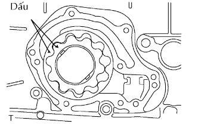
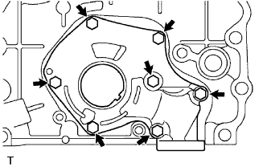
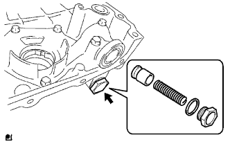

BƠM DẦU > LẮP LẠI |
| 1. LẮP BỘ RÔTO BƠM DẦU |
|  |
Bôi dầu động cơ lên bộ bánh răng bơm dầu và đặt nó vào thân bơm với dấu ghi nhớ hướng ra ngoài (phía nắp thân bơm). Kiểm tra rằng các rôto quay êm.
| 2. LẮP NẮP BƠM DẦU |
|  |
Lắp nắp bơm dầu bằng 7 bu lông.
| 3. LẮP VAN AN TOÀN CỦA BƠM DẦU |
Bôi dầu động cơ lên van an toàn.
|  |
Lồng van an toàn và lò xo vào lỗ thân bơm.
Lắp gioăng mới vào nút.
Dùng đầu khẩu 27 mm, lắp nút.